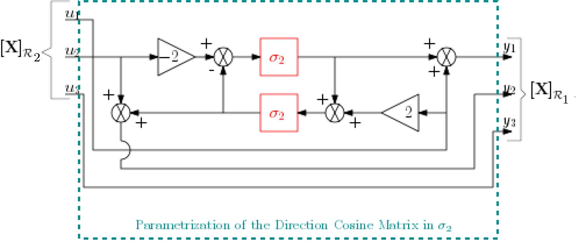
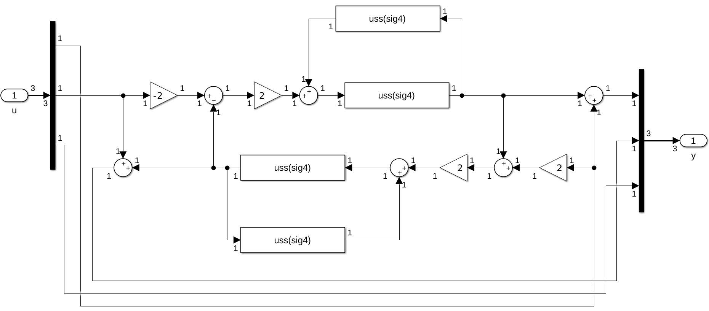

3x3 z-u_rotation
Linear parametrization of the (3x3) Direction Cosine Matrix associated to a rotation around the z-axis.
This block implements the LFT parametrization of the (3x3) direction cosine matrix (DCM) -or its transposed- associated to the rotation of a given angle $\theta$ around the $3^{rd}$ axis to transform the frame $\mathcal{R}_1$ into the frame $\mathcal{R}_2$.
$$ \mathbf{DCM}=\mathbf{P}_{2/1} = \left[\begin{array}{ccc} \cos(\theta) & -\sin(\theta) & 0 \\ \sin(\theta) & \cos(\theta) & 0 \\ 0 & 0 & 1 \end{array}\right] $$ The parametrization is in tangent of the quarter-angle: $\sigma_4=\tan(\theta/4)$ to derive LFT when $\theta$ is a varying or an uncertain parameter.
See also: 6x6z-u_rotation, 18x18z-u_rotation, 3x3z-nl_rotation, 6x6 z-nl_rotation
Contents
Description
If we consider the tangent of the half-angle: $\sigma_2 = \tan (\theta/2)$, the Direction Cosine Matrix becomes:
$$ \mathbf{DCM} = \left[\begin{array}{ccc} \frac{\displaystyle 1 - \sigma_2 ^2}{\displaystyle 1 + \sigma_2 ^2} & -\frac{\displaystyle 2\sigma_2 }{\displaystyle 1 + \sigma_2 ^2} & 0 \\ \frac{\displaystyle 2\sigma_2 }{\displaystyle 1 + \sigma_2 ^2} & \frac{\displaystyle 1 - \sigma_2 ^2}{\displaystyle 1 + \sigma_2 ^2} & 0 \\ 0 & 0 & 1 \end{array}\right] = \left[\begin{array}{ccc} 1 - \frac{\displaystyle 2 \sigma_2 ^2}{\displaystyle 1 + \sigma_2 ^2} & -\frac{\displaystyle 2\sigma_2 }{\displaystyle 1 + \sigma_2 ^2} & 0 \\ \frac{\displaystyle 2\sigma_2 }{\displaystyle 1 + \sigma_2 ^2} & 1 - \frac{\displaystyle 2 \sigma_2 ^2}{\displaystyle 1 + \sigma_2 ^2} & 0 \\ 0 & 0 & 1 \end{array}\right] $$
As terms like $\frac{\displaystyle \sigma_2 ^2}{\displaystyle 1 + \sigma_2 ^2}$ and $\frac{\displaystyle \sigma_2 }{\displaystyle 1 + \sigma_2 ^2}$ can be easily represented by feedback loops, a representation of the -uncertain or not- DCM matrix can be deduced:

Finally, as:
$$ \sigma_2 = \tan (\theta/2) = \frac{\displaystyle 2 \tan (\theta/4)}{\displaystyle 1 - \tan ^2 (\theta/4)} = \frac{\displaystyle 2 \sigma_4}{\displaystyle 1 - \sigma_4 ^2}\;, $$
blocks $\sigma_2$ can be changed into feedback loops with $\sigma_4$ (see Simulink diagram under the mask).
If $\theta$ has a fixed value, $\sigma_4$ has too. If $\theta$ is an uncertain parameter declared with "ureal", then $\sigma_4$ is also an uncertain parameter repeated $4$ times. Moreover if $\theta \in [-\pi,\pi]$ (a whole revolution), $\sigma_4$ varies in $[-1,1]$.
Ports
Input: a (3x1) vector $\mathbf{x}$ in the frame $\mathcal{R}_{2}$ (resp. $\mathcal{R}_{1}$)
Output: the expression of the (3x1) vector $\mathbf{x}$ in the frame $\mathcal{R}_{1}$ (resp. $\mathcal{R}_{2}$).
$\left[\mathbf{x}\right]_{\mathcal{R}_{1}} = \mathbf{DCM} \, \left[\mathbf{x}\right]_{\mathcal{R}_{2}}$ (resp. $\left[\mathbf{x}\right]_{\mathcal{R}_{2}} = \mathbf{DCM}^T \, \left[\mathbf{x}\right]_{\mathcal{R}_{1}}$)
Parameters
The only parameter is the angle $\theta$ (unit: $rad$). It can also be an uncertain parameter declared with "ureal" with mode "Range".
Example: >> ureal('theta',0,'Range',[-pi pi])
Remarks: when "ureal" us used, "ulinearize" rather than "linmod" is recommanded. Then the uncertain model is parameterized according to the real parameter labelled "tan_theta_div4".
A checkbox is proposed to implement the transposed: $\mathbf{DCM}^T$.
Simulink diagram under the mask
